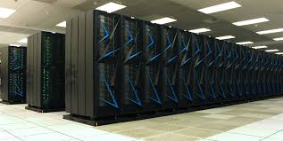
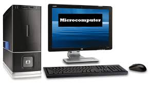
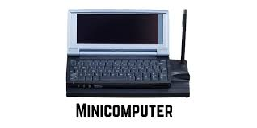
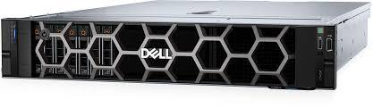
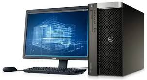

Page 1 ______________ Indroduction
Page 2 ________________ Discussion
Page 3 _______ Types of Computers
Page 4 _________________ Examples
Page 5 ____ Compare and Contrast
A computer is an electronic device that processes data by following instructions to perform arithmetic or logic operations. Computers come in different sizes, speeds, memory, and power. There are various types of computers; these are supercomputers, mainframe computers, minicomputers, servers, workstations, and microcomputers. Each type is designed to meet specific needs and applications in different environments.
Let’s start with the fastest and most powerful computer, the supercomputer. A supercomputer is defined as the fastest type of computer. This computer is used for specific applications that need a massive number of mathematical calculations (Cook, 2011). A mainframe computer is a type of computer that is designed to process data as fast as possible, and it can also perform thousands of operations at once. This type of computer is primarily used for high-speed data processing with significant use of input/output units like large-capacity disks and printers (GeeksforGeeks, 2020). Moving on to mini computers, this computer is considered a mid-range computer, smaller than mainframes but larger than micro computers. This computer possesses all the features of larger computers, with some models being more powerful than regular desktops (ClearCube Technology, 2020). A server computer manages network resources, data, services, or programs for other computers. This powerful computer offers various services such as network storage, web hosting, and application processing (Editor, n.d.). The next type of computer is a workstation. This type of computer is a high-performance computer system. This computer is specifically designed for a single user and demanding professional workflows such as data science and engineering (Gerencer, 2021). Lastly are micro computers. These types of computers have a small build and are relatively inexpensive computers that feature a CPU made from a single integrated circuit microprocessor. This computer contains computing devices; this includes a microprocessor, memory, and input/output accessories, and this type of computer is also known as a personal computer (Lenovo, 2021).
| Types of Computer | Name/Brand | Build | CPU | Memory | Processing | Calculating Power | Working Principle | Energy Consumption | Field of Use |
|---|---|---|---|---|---|---|---|---|---|
| Supercomputer | Sierra (IBM) | Very large system that fills an entire room; made up of many racks and cabinets connected together | 8,640 IBM Power9 CPUs + 17,280 NVIDIA Tesla V100 GPUs | 1.38 PB | 125 petaFLOPS | 125 petaFLOPS | Works by processing many calculations at the same time using thousands of processors | Very High (megawatt level) | National security simulations, scientific research, nuclear testing. |
| Mainframe Computers | IBM z16 | Tall and wide cabinet-sized machine; heavy and built for large data centers | IBM Telum processor (7 nm AI acceleration) | Up to 40 TB | Handles up to 1 trillion transactions/day | Hundreds of GFLOPS | Handles many users and transactions at once, ensuring data accuracy and security | High (kilowatt level) | Banking, insurance, airline data processing. |
| Mini Computers | PDP-11 (DEC) | Desk-sized system; smaller than mainframes but larger than desktops; metal casing. | 16-bit processor | 256 KB – 4 MB | Around 1 MHz | Around 0.3 MIPS | Processes tasks for small groups; takes instructions one by one | Moderate – lower than mainframes | Used in small businesses, factories, and labs |
| Server | Dell PowerEdge R760 | Rack-mounted unit (2U size); designed to fit into a server rack; metal case for cooling and stacking | Intel Xeon Scalable processor; multi-core | Up to 8 TB RAM | 2.0 – 3.8 GHz per core | Around 1,000+ MIPS | Sends, stores, and manages data for networks and websites | Medium to high – runs 24/7 | Used by companies to host websites or handle company databases |
| Workstations | HP Z8 Fury G5 | Tower-shaped case; larger and heavier than normal desktops; has strong cooling fans | Intel Xeon W9 processor; multi-core | Up to 1 TB RAM | 4.0 GHz | Around 500+ MIPS | Works like a powerful desktop for 3D design and video editing | Medium | Used by designers, engineers, and editors |
| Micro Computers | Lenovo ThinkCentre / Dell Inspiron | Small desktop or laptop-sized build; lightweight and portable; fits on a table | Intel Core i7/i9 or AMD Ryzen | 8 GB – 64 GB RAM | 3.0 – 5.0 GHz | Around 100–200 MIPS | Handles everyday computing like browsing, editing, and gaming | Low | Used at homes, schools, and offices for daily work |
| Types of Computer | Image | Discription | Usage |
|---|---|---|---|
| Supercomputer |  | One of the world’s fastest supercomputers,capable of 125 petaFLOPS. (McCann, 2024) | Used in scientific research and national security. |
| Mainframe Computers |  | Large-scale computer for business data management. (GeeksforGeeks, 2020) | Used by banks and large enterprises. |
| Mini Computers |  | Medium-sized system supporting several users. (ClearCube Tech, 2020) | Used in education and small organizations |
| Server |  | Manages network data and storage for users. (CSRC, n.d.) | Used in company networks and cloud computing. |
| Workstations |  | High-end computer for graphics or engineering. (HP, 2021) | Used by designers, animators, engineers. |
| Micro Computers | Small, affordable computer for everyday tasks. (Lenovo, 2021) | Used at home, school, and offices. |
A mini computer has a moderate amount of memory and a medium processing speed, although it is slower than a workstation or even a server, this computer is faster than a microcomputer. Mini computers typically use a moderate amount of power and have memory sizes ranging from a few megabytes to a few gigabytes. Small businesses, educational institutions, and labs are the primary settings for mini computers. For small groups or organizations that require dependable computing power at a reduced cost, this computer is perfect.
The smallest and least powerful of the four is a microcomputer, sometimes referred to as a personal computer. It has the slowest processing speed and typically has 8 GB to 64 GB of RAM, which is sufficient for everyday activities like typing, browsing, and watching TV. Microcomputers are easy to maintain and consume very little power. They are frequently utilized in homes, workplaces, and educational institutions and are made for single users. They are ideal for basic, daily computing tasks and are reasonably priced and portable.
A workstation is a powerful computer designed for professionals who need accuracy and speed, with multi-core processors and large memory (up to 1 terabyte or more). It is faster and more powerful than both micro and mini computers. Because workstations have powerful graphics cards and fast processors, they consume medium to high amounts of power. For challenging jobs like 3D modeling, animation, and software development, engineers, designers, video editors, and architects primarily use them.
The most powerful of the four types is a server. It has a large memory capacity—often several terabytes—and a very fast processing speed. Because they must run around the clock to serve numerous users or computers at once, servers use a lot of energy. They are designed to manage and store vast volumes of data, support network communication, and withstand demanding workloads. Businesses and organizations use servers to host websites, maintain databases, and provide online services.